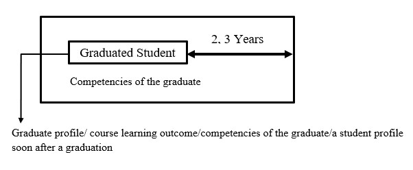
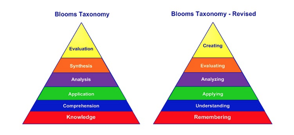

Session Details
- Date: 18th September 2020
- Topic: Curriculum Development
- Resource Person: Prof. Ranjith Pallegama
Topics covered in this session
- Outcome Based Education
- What is a Curriculum?
- General Challenges in Higher Education
- Graduate Profile
- Curriculum Revision
- Developing a Course
- Domains of Learning
- Bloom’s Taxonomy
- K-SAM Model
What is Outcome-Based Education?
Outcome-based education is a model of education that rejects the traditional focus on what the school provides to students, in favour of making students demonstrate that they "know and are able to do" whatever the required outcomes are.
What is a Curriculum?
Curriculum is a standards-based sequence of planned experiences where students practice and achieve proficiency in content and applied learning skills. Curriculum is the central guide for all educators as to what is essential for teaching and learning, so that every student has access to rigorous academic experiences.
PEO: Program Expected Objective
Expectation of a study program
CLO: Course Learning Outcome
These are to be achieved within the course period. Achieving the CLOs of all the modules in 1st year, should support to achieve the CLOs of 2nd, 3rd, 4th year CLOs and achieve graduated profile.
What is a Graduate Profile?
Graduate profiles are descriptions of attributes, or knowledge, skills and attitudes, which a university community intends its graduates will develop through their study to equip them for their future education or employment.
Attributes of Graduate Profile (SLIIT)
- Information literacy
- Communication
- Personal and intellectual autonomy
- Ethical, social, and professional understanding
To create a graduate profile, you should consider;
- Stakeholder opinions
- Expert opinions
- Benchmark statements
Blooms Taxonomy
Bloom’s Taxonomy is a classification of the different objectives and skills that educators set for their students (learning objectives). The taxonomy was proposed in 1956 by Benjamin Bloom, an educational psychologist at the University of Chicago. The terminology has been recently updated to include the following six levels of learning

- Remembering:
Retrieving, recognizing, and recalling relevant knowledge from long‐term memory.
- Understanding:
Constructing meaning from oral, written, and graphic messages through interpreting, exemplifying, classifying, summarizing, inferring, comparing, and explaining.
- Applying:
Carrying out or using a procedure for executing, or implementing
- Analyzing:
Breaking material into constituent parts, determining how the parts relate to one another and to an overall structure or purpose through differentiating, organizing, and attributing.
- Evaluating:
Making judgments based on criteria and standards through checking and critiquing.
- Creating:
Putting elements together to form a coherent or functional whole; reorganizing elements into a new pattern or structure through generating, planning, or producing.
- Knowledge: What the qualification holders know
- Skills: What the qualification holders can do
- Attitudes, Values, Professionalism and Vision for life: How the qualification holders think and behave
- Mind-set and Paradigm: How the qualification holders perceive the world
- What is the educational purpose of the curriculum?
What kind of graduate we need?
- What experiences should be provided?
What do they learn?
- How can this experience be organized for effective instructions?
How do they learn?
- How to determine the attainment of learning?
How to access the learning outcomes?
- Investigate & analyzed simple real world problems in any given domain
- Develop solution to identified real world problems using appropriate principles, tools & processes.
- Evaluate & justify possible software solutions to meet user expectations.
- Extend & generate new knowledge in SE for continual developments.
- Communicate effectively with software engineering team & other stakeholders using a wide range of communication media and technical aids.
- To work effectively as an individual or in teams.
- Commit to ethical & social responsibilities in professional & community pursuits.
- Use technology with respect & responsibly.